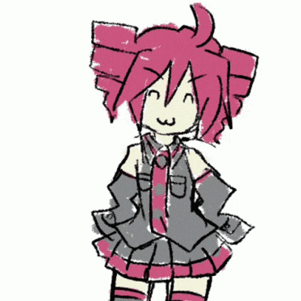

Kasane Teto es una cantante virtual japonesa que se utiliza para crear canciones mediante programas de voz sintetizada. Originalmente fue creada como una broma, pero terminó convirtiéndose en un personaje muy popular dentro de la comunidad de música vocal sintética. Se puede utilizar con programas gratuitos y de código abierto, como UTAU, que permiten a los usuarios crear sus propias canciones y modificar su voz